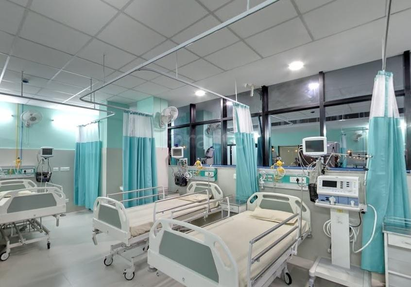

Orthopaedics
“Stronger Bones- The Stronger & Healthier You"
Many people with knee, hip, back or other joint pain don’t undergo treatment because of the fear of surgery. At Jaipur Golden Hospital, we follow personalised and patient-centric approach to make the patients more cared for and comfortable. We completely understand the challenges faced by the patients during the difficult period of treatment & recovery. Our highly skilled Senior Orthopaedic Consultant(D Ortho, MS, FIAMS) with 35 years of experience in this field guides the patients through the entire process and offers one-stop solution to meet the needs of the patient with additional peace of mind. Our orthopaedic surgeons are recognized nationally as well as internationally as leaders for using minimally invasive techniques and bone conserving techniques which is of great benefit to the patients resulting in less blood loss, reduced pain, faster recovery and shorter stay at the hospital. We relentlessly strive to improve the quality of life for our patients and support them at every step of the way.
- Services offered by the Orthopaedic division:
CONTACT US
Reach Us
Feedback
Location
We care... with care.
Choose by Speciality, Treatment, or Doctor
FIND A DOCTOR
LAB REPORT
REQUEST AN APPOINTMENT
VIRTUAL TOUR
Awards & Certifications
assuring the highest level of medical and service quality.
Orthopaedics
Home -
Specialities -
Cardio Thoracic Surgery
“Stronger Bones- The Stronger & Healthier You"
Many people with knee, hip, back or other joint pain don’t undergo treatment because of the fear of surgery. At Jaipur Golden Hospital, we follow personalised and patient-centric approach to make the patients more cared for and comfortable. We completely understand the challenges faced by the patients during the difficult period of treatment & recovery. Our highly skilled Senior Orthopaedic Consultant(D Ortho, MS, FIAMS) with 35 years of experience in this field guides the patients through the entire process and offers one-stop solution to meet the needs of the patient with additional peace of mind. Our orthopaedic surgeons are recognized nationally as well as internationally as leaders for using minimally invasive techniques and bone conserving techniques which is of great benefit to the patients resulting in less blood loss, reduced pain, faster recovery and shorter stay at the hospital. We relentlessly strive to improve the quality of life for our patients and support them at every step of the way.
- Services offered by the Orthopaedic division:
- Knee Joint Replacement including revision
- Pelvic Acetabular problems including Fracture, Tumor etc.
- Arthroscopy & Sports Medicine
- Spine surgery like DISC Surgery, Every type like Endoscopic, Micro Discectomy, Spine Tuberculosis, Spine Cancer, Spinal Trauma, Kyphoplasty, Vertebroplasty.
- Paediatric Orthopaedics: Fractures in children, Congenital defects like Club Feet, DDH etc. Cerebral Palsy.
- Metabolic Disorders like Osteoporosis, Osteomalacia, Rickets etc.
- Trauma Including Advance Trauma with State of the Art Fracture Treatment
- Bone Cancer.
- Fractures in old age specially Hip Bones.
- Special Back Pain, Joint Replacement and other Clinics.
- State-of-the-art Physiotherapy and Rehabilitation centre.
- Institute has two specialized clinics
- Joint replacement clinic
- Spine clinic
Mercy Healthcare can make a real difference in the lives of people suffering from joint and bone pain. The institute offers consultation, diagnosis and treatment of any injury or disease of bones & joints that may include sports related injuries of knees, hip, shoulder, ankle, hand or other joints, fractures, trauma, spinal injury, joint infections and replacement surgeries. The Institute is managed by highly experienced and qualified Orthopaedicians, physiotherapists, intensivists and the paramedical staff which make a preferred destination for all kind of orthopaedic and trauma care needsKnee Joint Replacement including revision
Pelvic Acetabular problems including Fracture, Tumor etc.
Arthroscopy & Sports Medicine
Spine surgery like DISC Surgery, Every type like Endoscopic, Micro Discectomy, Spine Tuberculosis, Spine Cancer, Spinal Trauma, Kyphoplasty, Vertebroplasty.
Paediatric Orthopaedics: Fractures in children, Congenital defects like Club Feet, DDH etc. Cerebral Palsy.
Metabolic Disorders like Osteoporosis, Osteomalacia, Rickets etc.
Trauma Including Advance Trauma with State of the Art Fracture Treatment
Bone Cancer.
Fractures in old age specially Hip Bones.
Special Back Pain, Joint Replacement and other Clinics.
State-of-the-art Physiotherapy and Rehabilitation centre.
Institute has two specialized clinics
Joint replacement clinic
Spine clinic
Mercy Healthcare can make a real difference in the lives of people suffering from joint and bone pain. The institute offers consultation, diagnosis and treatment of any injury or disease of bones & joints that may include sports related injuries of knees, hip, shoulder, ankle, hand or other joints, fractures, trauma, spinal injury, joint infections and replacement surgeries. The Institute is managed by highly experienced and qualified Orthopaedicians, physiotherapists, intensivists and the paramedical staff which make Jaipur Golden Hospital a preferred destination for all kind of orthopaedic and trauma care needs
